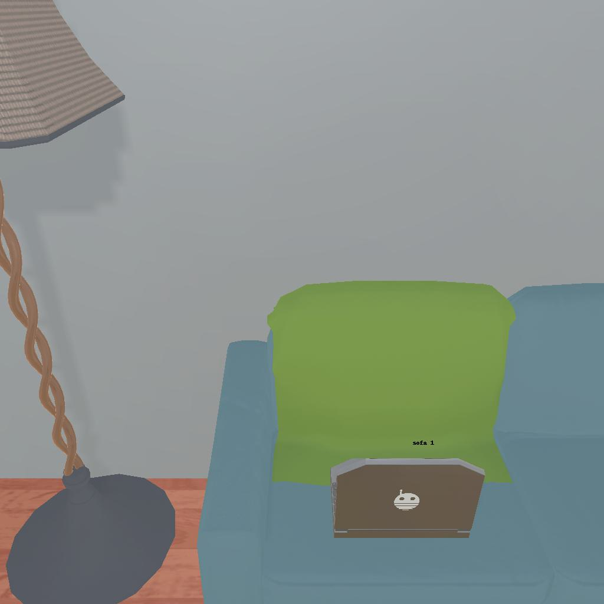

---------------------------------------------------------task: 4---------------------------------------------------------
--------------------------------------------------------------------------------------------------------------------------------------------------------------------
--------------------------------------------------------------------------------------------------------------------------------------------------------------------
Step:--------------------------------------------------------------------------0-------------------------------------------------------------------------------
----------------------------------------
VLM Prompt:
Image1:
**Instruction**
1. Analyze the provided image to identify all visible household objects, focusing on those relevant to the task description "look at statue under the floorlamp."
2. Use the analysis of the image and the task hint "The agent must find an object of the desired type, locate and turn on a light source with the desired object in-hand." to answer the question: what is the most reasonable action in the choices for the task description "look at statue under the floorlamp"?
4. Decide and write the answer using the template: The answer is: (i): , where i is the real number. If there is no desired object in the image, search every place based on **Initial Observation** to find the object. And if no one is exactly correct, choose a similar answer.
**Initial Observation**
You are in the middle of a room. Looking quickly around you, you can see armchair (1), coffeetable (1-2), sidetable (1), garbagecan (1), drawer (1), sofa (1), diningtable (1)
**Answer Choices**
(1): go to armchair 1
(2): go to coffeetable 1
(3): go to sidetable 1
(4): go to garbagecan 1
(5): go to drawer 1
(6): go to sofa 1
(7): go to coffeetable 2
(8): go to diningtable 1
**Answer**
Let's think step by step by following the instructions.
----------------------------------------
----------------------------------------
Original Response:
Firstly, we should identify all visible household objects in the image. From the image, we can see a floorlamp, a sofa with a green cushion, and a small table with a brown surface in front of the sofa, likely a coffee table.
Next, considering the task description "look at statue under the floorlamp," we need to find an object that could be a statue. There is no clear statue visible in the image under the floorlamp. According to the task hint, the agent must find an object of the desired type (statue), locate and turn on a light source with the desired object in-hand. Since we cannot see a statue in the image, we need to search every place based on the initial observation to find the object.
From the initial observation, the places where a statue could be located are armchair (1), coffee table (1-2), side table (1), garbage can (1), drawer (1), sofa (1), and dining table (1).
Considering the proximity to the floorlamp for the task "look at statue under the floorlamp," the most reasonable actions would involve going to the coffee table or side table, as they are typically placed near sofas and lamps in a living room setting. However, since coffee table 1 is closer to the sofa seen in the image (and likely the floorlamp), it would be the most logical place to start the search for a statue.
The answer is: (2): go to coffeetable 1.
----------------------------------------
----------------------------------------
>>> Refine Original VLM Response and Get Pure Action: go to coffeetable 1
----------------------------------------
-----------------------------------------------------------------
Running time: 22.356926441192627 seconds
Total Money: 1.82823
-----------------------------------------------------------------
-----------------------------------------------------------------
Text Observation:You arrive at loc 1. On the coffeetable 1, you see a television 1.
-----------------------------------------------------------------
UNSUCCEED